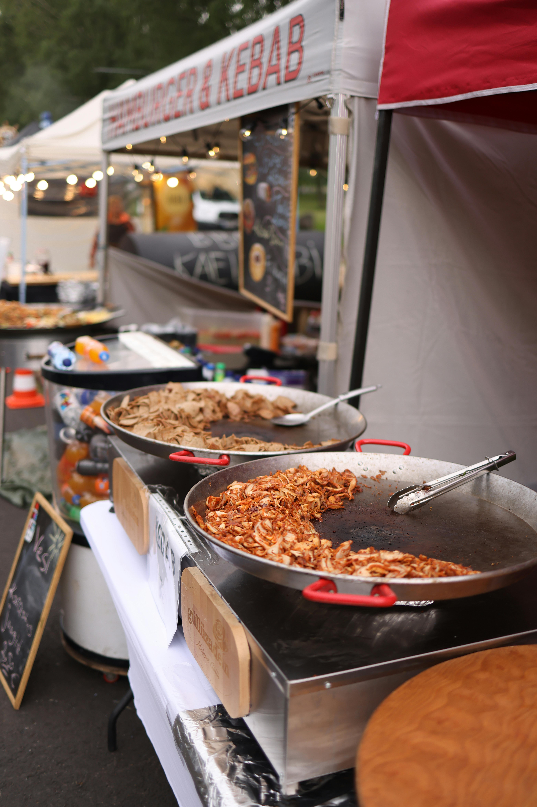

Naša zgodba
Festival hrane se je začel leta 2020 kot majhen dogodek, namenjen povezovanju lokalnih ponudnikov hrane in ljubiteljev dobre kulinarike.
Naša vizija je ustvariti prostor, kjer se srečajo okusi, kultura in skupnost ter kjer ima lokalna hrana posebno mesto. Podpiramo domače pridelovalce in trajnostne pristope.